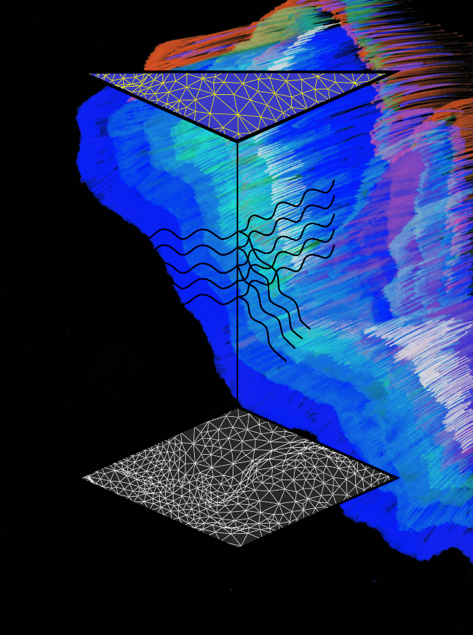

About
For the Spring/ Summer 2024, the material collected through the research phase will be organized as a mixed media public exhibition to be presented at the common areas at AKB Lundtoftegade. This exhibition will treat the archival material (interviews with the residents and images of the personal objects) and indexes to reflect on the historical development and the importance of the affective values and narratives in the shaping of spaces.
Departing from an intimate and personal perspective, the artist will work towards revealing some traces and layers of the multiple stories of the residents of the area, creating a virtual sculpture park that will interweave the poetics of memory and space.